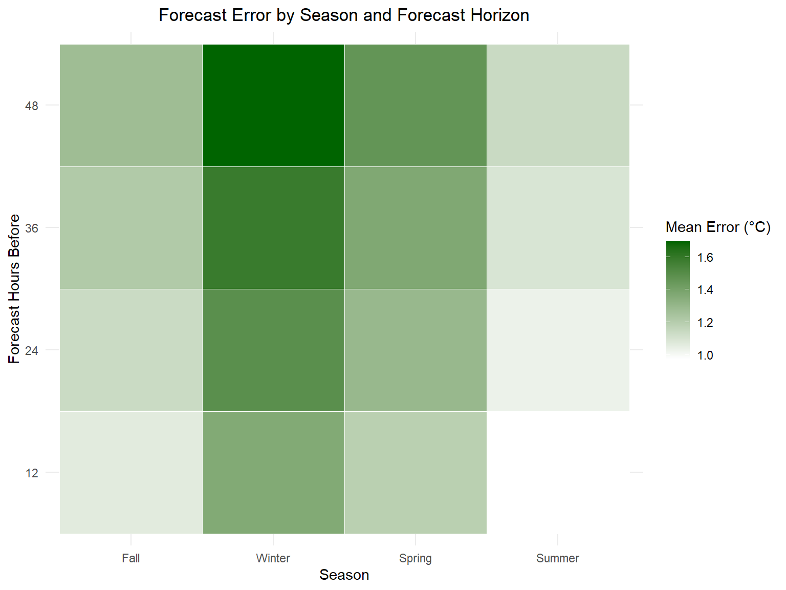

The dataset we are analyzing in this report is the Weather Forecast Accuracy, taken from the repository of the TidyTuesday project. The data comes from the USA National Weather Service and includes 16 months of forecasts across 167 cities. This analysis examines the reliability of weather forecasts and the factors that may influence their accuracy through four questions:
Does forecast error increase as the forecast is made more in advance?
Are some climate zones harder to predict than others?
Do seasons influence weather forecast accuracy?
Does the altitude of a city have a relation with forecast error?
The mean error for all forecast horizons is negative. This indicates that, on average, forecasts underestimate the actual temperature. The mean error is surprisingly slightly lower for forecasts made 48 hours in advance rather than 12 hours before, while the standard deviation increases as the hours before the observation increase.
Climate zones
The dataset is based on the Köppen climate classification, a system developed by German climatologist Wladimir Köppen to describe climates depending on local vegetation by using letters. These letters indicate various things in order: climate type, precipitation and temperature.
Here is a map of the world showing the 5 climate types:
Are some climate zones harder to predict than others? Since in the data there are 15 climates included and some present more observations than others, we decided to study only the top 7.
Forecast errors are highest for the Dfc (Subarctic) climate, which is a type of climate with no significant difference in precipitation between seasons, followed by the BSk (Arid Steppe) climate, characterized by low precipitation and large temperature ranges. Therefore, climates with stronger temperature variability or harsher environmental conditions may be more difficult for forecasting models to predict accurately.
Seasonal Forecast Accuracy
Do seasons influence weather forecast accuracy?
ggplot(season_summary, aes(x =factor(season, levels =c("Fall","Winter","Spring","Summer")),y =factor(forecast_hours_before),fill = mean_error)) +geom_tile(color ="white") +scale_fill_gradient(low ="white", high ="darkgreen") +labs(title ="Forecast Error by Season and Forecast Horizon",x ="Season",y ="Forecast Hours Before",fill ="Mean Error (°C)" ) +theme_minimal() +theme(plot.title =element_text(hjust =0.5) )

The heatmap clearly shows that weather accuracy is particularly low in Winter. This can be attributed to different factors, such as pressure systems and movement of the Arctic Air. To learn more about the reasons, read this article written by David M. Ewalt for the Scientific American, focused on US weather forecasts, or this blog post from Severe Weather Europe for an in-depth worldwide perspective of the phenomenon.
Elevation Change
Elevation change refers to the difference in elevation between two points on Earth’s surface (typically relative to sea level). The dataset presents two columns related to elevation: elevation_change_four and elevation_change_eight. We decided to use the latter because it’s considered more reliable and accurate due to the incorporation of more data points, reducing directional bias and improving representation of local topography.
The plot suggests a slight increase in forecast error as elevation increases. This may occur because mountainous areas often have more complex atmospheric conditions, making weather patterns harder to model.
“Differing amounts and types of air molecules present in atmosphere’s layers result in temperatures that cool with height at some altitudes and warm with height at others.”1
Conclusions
This report shows that weather forecasts are pretty accurate with a mean error between 0.21°C and 0.26°C depending on the hours the forecast was made before the observed temperature. Factors that appear to influence accuracy are climate zones, seasonal patterns and elevation above sea level. Further studies could be carried out on geographic and local factors and long-term analysis across decades to see if there is an improvement in forecasting models.
Footnotes
UCAR - Center for Science Education. Change in the Atmosphere with Altitude. https://scied.ucar.edu/learning-zone/atmosphere/change-atmosphere-altitude (Accessed March 9, 2026)↩︎